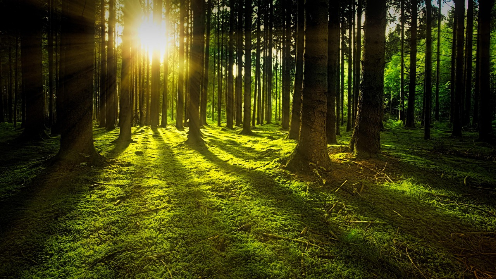

Alhamdulillah, alhamdulillahilladzi khalaqas-samawati wal-ardha wa ja'alaz-zulumati wan-nur. Puji dan syukur senantiasa kita panjatkan kehadirat Allah SWT, Tuhan Yang Maha Esa, yang telah melimpahkan nikmat iman, Islam, serta kesehatan kepada kita semua. Di atas segala-galanya, Allah telah menganugerahkan bumi tempat kita berpijak ini lengkap dengan segala sumber daya alam dan energi yang melimpah ruah demi kelangsungan hidup umat manusia.
Shalawat serta salam semoga senantiasa tercurah kepada uswatun hasanah kita, Baginda Nabi Muhammad SAW, keluarga, para sahabat, serta pengikutnya yang setia hingga akhir zaman. Nabi yang diutus bukan hanya membawa risalah ibadah ritual, melainkan sebagai pembawa rahmat bagi seluruh alam semesta (rahmatan lil 'alamin), termasuk mengajarkan kita untuk mengasihi makhluk hidup dan menjaga lingkungan di sekitar kita.
Dalam kesempatan yang penuh berkah ini, marilah kita merenungkan kembali sebuah amanah besar yang diletakkan di pundak kita. Manusia diciptakan dan ditunjuk oleh Allah SWT sebagai khalifah di muka bumi. Tugas utama seorang khalifah bukanlah untuk mengeksploitasi alam sesuka hati, melainkan untuk memakmurkan, merawat, dan menjaga keseimbangan ekosistem yang telah diciptakan dengan begitu sempurna.
Namun, kenyataan hari ini sering kali menunjukkan hal yang sebaliknya. Banyak dari kita yang lalai dan menganggap bahwa sumber daya alam serta energi yang kita gunakan setiap hari bersifat tanpa batas. Kita kerap membiarkan lampu menyala tanpa keperluan, menghambur-hamburkan air bersih, menggunakan peralatan elektronik secara berlebihan, hingga menggunakan kendaraan bermotor secara tidak bijak tanpa memikirkan polusi yang ditimbulkannya. Sikap boros, berlebih-lebihan, dan sia-sia ini di dalam Islam dikenal dengan istilah israf atau tabzir, sebuah tindakan tercela yang sangat tidak disukai oleh Allah SWT.
ظَهَرَ الْفَسَادُ فِي الْبَرِّ وَالْبَحْرِ بِمَا كَسَبَتْ أَيْدِي النَّاسِ لِيُذِيقَهُمْ بَعْضَ الَّذِي عَمِلُوا لَعَلَّهُمْ يَرْجِعُونَ
"Zaharal-fasadu fil-barri wal-bahri bima kasabat aidin-nasi liyuziqahum ba'dallazi 'amilu la'allahum yarji'un."
"Telah tampak kerusakan di darat dan di laut disebabkan karena perbuatan tangan manusia; Allah menghendaki agar mereka merasakan sebagian dari (akibat) perbuatan mereka, agar mereka kembali (ke jalan yang benar)."
Ayat ini menjadi peringatan bahwa kerusakan lingkungan di darat maupun laut terjadi akibat ulah manusia sendiri. Bencana yang terjadi merupakan teguran agar manusia sadar, berhenti melakukan kerusakan, dan kembali menjaga kelestarian alam ciptaan-Nya.
Menghemat energi merupakan wujud nyata kepedulian lingkungan dan rasa syukur kita. Mulailah dari hal kecil seperti mematikan lampu dan membatasi kendaraan demi menjaga berkat yang Tuhan percayakan untuk generasi mendatang.
Aamiin.